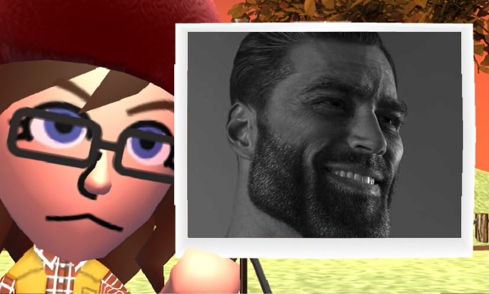
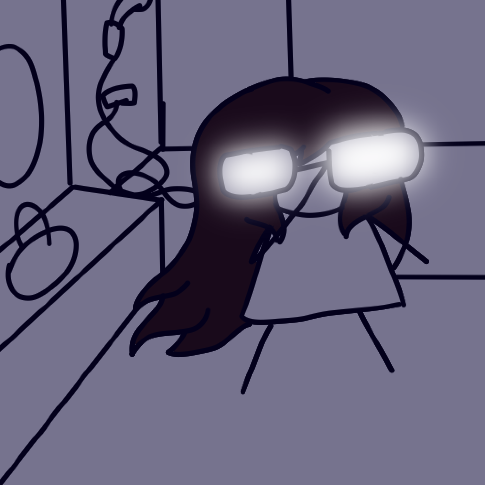

Je vais désormais vous parler de mes projets d'IUT. Je ne parlerais pas de mes projets de Lycée car un est un projet Python perdu à jamais. (Triste) Et l'autre est un site du même acabis que celui-ci. J'ai repris le style car au final j'aimais bien.
Le premier jeu que je vais mentionner est un jeu de donjon programmé en Java. Les dessins sont de l'ASCII art et je n'ai pas eu le droit d'utiliser le moindre objet. C'était immonde mais on l'a fait.
Mes principaux intérêts sont les jeux vidéos, le dessin et les animés.
Je ne me qualifierais pas de personne excéssivement sérieuse mais j'essaie au moins donc ça c'est bien non ?
Ah aussi je suis une grande amatrice de memes
Je dessine parfois. Certes ça n'est pas ma spécialité mais je pense qu'avec que j'en aurais besoin pour faire des jeux moi même non ?
Je crois que c'est tout pour la présentation donc si vous voulez revenir au menu principal bah il faudra cliquer si le petit lien en dessous.